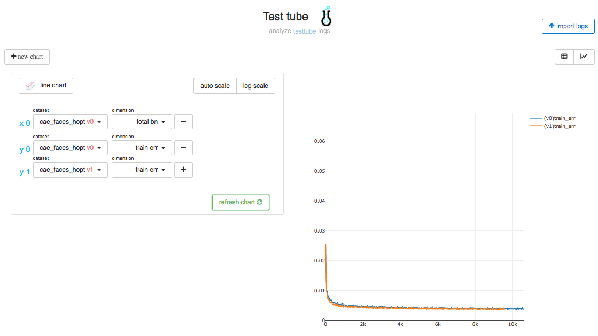

Test Tube: Easily log and tune Deep Learning experiments
Test Tube allows you to easily log metadata and track your machine learning experiments.
Use Test Tube if you need to:
- Track many Experiments across models.
- Visualize and compare different experiments without uploading anywhere.
- Optimize your hyperparameters using grid_search or random_search.
- Automatically track ALL parameters for a particular training run.
Test Tube is compatible with: Python 3
Getting started
Create an Experiment
from test_tube import Experiment
exp = Experiment(name='dense_model',
debug=False,
save_dir='/Desktop/test_tube')
exp.add_meta_tags({'learning_rate': 0.002, 'nb_layers': 2})
for step in training_steps:
tng_err = model.eval(tng_x, tng_y)
exp.add_metric_row('tng_err': tng_err)
# training complete!
# all your logs and data are ready to be visualized at testtube.williamfalcon.com
Optimize your hyperparameters
from test_tube import HyperOptArgumentParser
# subclass of argparse
parser = HyperOptArgumentParser(strategy='random_search')
parser.add_argument('--learning_rate', default=0.002, type=float, help='the learning rate')
# let's enable optimizing over the number of layers in the network
parser.add_opt_argument_list('--nb_layers', default=2, type=int, tunnable=True, options=[2, 4, 8])
# and tune the number of units in each layer
parser.add_opt_argument_range('--neurons', default=50, type=int, tunnable=True, start=100, end=800, nb_samples=10)
# compile (because it's argparse underneath)
hparams = parser.parse_args()
# run 20 trials of random search over the hyperparams
for hparam_trial in hparams.trials(20):
train_network(hparam_trial)
Visualize results and compare across arbitrary trials
